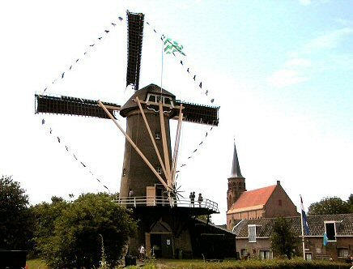

"De Korenaer"

|  | Wanneer Loosduinen precies een korenmolen heeft
gekregen is niet bekend. Maar de abdij bezat een korenmolen. Deze molen is in 1569
gesloopt, tot treurnis van de Loosduiners, die hun graan nu in het Westland moesten laten
malen. Omdat de Loosduiners klaagden over het verlies van hun molen, liet Prins Maurits in
1595 een nieuwe bouwen. Toen de "Maurits-molen" werd gebouwd, was hij geheel van
hout. In 1720 woedde een zware storm waarbij het houten bovengedeelte geheel vernield
werd. De herbouw werd meteen ter hand genomen. Het sluitsteentje boven de ingang herinnert
aan deze herbouw : op dat steentje staat het jaartal 1721. De stenen onderbouw
dateert dus nog van de eerste molen uit 1595. Tijdens de Franse tijd (1798) werden alle
adellijke bezittingen nationaal bezit, dus ook de molen. Tenslotte werd in 1812 de molen
weer particulier bezit Er werd sinds die tijd regelmatig van eigenaar gewisseld.
Toen in 1925 de laatste particuliere eigenaar er over dacht de molen te laten slopen (de
noodzakelijke restauratie koste veel geld) greep de gemeente Den Haag in. Ze kocht de
molen voor f 19.500-. en liet de molen restaureren. Bij die koop in 1925 verwierf de gemeente het bijbehorende windrecht, wat inhoud dat er geen hoogbouw in de
directe omgeving van de molen mocht verrijzen. Omstreeks 1956-1957 is de molen ook
gerestaureerd, waarbij o.a. een nieuwe stelling werd aangebracht. Verder was er de
verplichting de molen 52 maal per jaar te laten draaien. Den Haag breidde steeds meer uit
wat tot gevolg had, dat normaal functioneren niet meer mogelijk was. In 1980 vond een
grote restauratie plaats, waarbij o.a. de bovenas werd vernieuwd. Een aantal jaren later
werd een vrijwillig molenaar aangesteld, die de molen regelmatig in bedrijf stelt. Bekijk hier beelden gemaakt met een Drone door Rene Oudshoorn. Eigen website: http://www.molendekorenaer.nl/ |
Technische gegevens
| naam adres bouwjaar type functie eigenaar molenaars Openingstijden |
"De Korenaer"of molen "Prins
Maurits" Margaretha van Hennebergweg 4 Loosduinen 1721 stellingmolen korenmolen gemeente 's-Gravenhage sinds 1925 Rien Koolstra (0651537239) en Jan Hirs (0681705289) Donderdag van 10.00 uur tot 16.30 uur. Zaterdag van 10.00 uur tot 16.30 uur. |
Constructie
| voet romp kap wiekenkruis vlucht wiekvorm bovenas kruiwerk vang inrichting |
vierkante stenen voet van vier meter hoog ronde stenen molen gedekt met riet gelaste stalen roede, Fabr. Derckx, Beegden binnenroede: nr: 385 buitenroede: nr. 384 (beide uit 1981) 21,60m. Oudhollands gietijzer, Fabr. De Prins van Oranje, ijzergieterij te 's Hage 1873 No. 864 ; lang 4,84 30 houten rollen ; kruirad losse Vlaamse blokvang uit vier stukken ; wipstok twee koppels 16der kunstmaalstenen ; twee regulateurs sleepluiwerk |
Overbrengingen
| aantal kammen bovenwiel aantal staven bovenschijfloop aantal staven steenschijfloop aantal kammen spoorwiel overbrengingsverhouding |
57 26, steek 11,0 cm. 19 60, steek 8,8 cm. 1 : 6,92 |
Versieringen
|
baard, oranje geschilderd met witte rand en opschrift : ANNO 1721 DE KORENAER boven de toegangsdeur een sluitsteen met het jaartal 1721 |
Aanvulling
|
De maalzolder ligt een meter lager dan de stelling De gietijzeren bovenas, Fabr. F.J. Penn & Comp, Dordrecht 1863 no 289 ; lang 4,00m. is in 1980 vervangen wegens askopbreuk |
 Deze pagina is gemaakt op 20-12-2006 tijd: 21:15 uur.
Deze pagina is gemaakt op 20-12-2006 tijd: 21:15 uur.

Laatste wijziging: